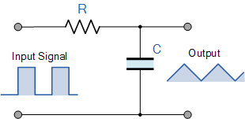

§ 3.4.4 Oscillator
| The RC Integrator | The RC differentiator |
|---|---|
| Low Pass Filter | High Pass Filter |
|  |  |
The two circuits comprise the same electric components, but wired in a different way: they form a serial and a parallel circuit, respectively. The serial circuit is a passive differentiator circuit: ”the input is connected to a capacitor while the output voltage is taken from across a resistance” and it is not not to be mismatched with the parallel passive integrator circuit where ”the input is connected to a resistance while the output voltage is taken from across a capacitor”. One of the most vital differences between those circuits (see also the figures in Table 3.1) that their output is defined by the time integral of the input voltage (or current) or by its time derivative. From biological point of view, the differentiator can produce output voltage that differs from the input voltage in its sign, while the integrator cannot.
The integrator and differentiator are entirely different assemblies from the same components (based on the abstraction that and are discrete elements and the wiring is an ideal conductor), as their differential equations and waveforms show; see table from the electric tutorial. Although they have the same time constant , they form the input signal entirely differently. From the figures showing the generated signal forms, one sees that in the case of the differentiator, the input signal’s rising edge generates a rising output voltage, and the falling edge generates a voltage with opposite sign compared to the input voltage, in resemblance with the action potential. By replacing the input square wave current with a physically plausible input current function, we have good hopes to reproduce the AP voltage on the output of the circuit.
The Differentiator is a High Pass Filter type of circuit that can convert a square wave input signal into high frequency spikes at its output (For non-square wave input, the spikes get smeared). When the capacitor is fully charged the output voltage across the resistor is zero. The arrival of the falling edge of the input waveform (whether square-wave or other type of falling edge) causes the capacitor to reverse its current giving a negative output contribution, and the output spike changes from a positive value to a negative value, purely because it is a derivative. From the point of view of laws of motion (see section 3.5.1): the differentiator is the circuit, which can be described by the biological laws of motion, namely by Eq.(3.13).